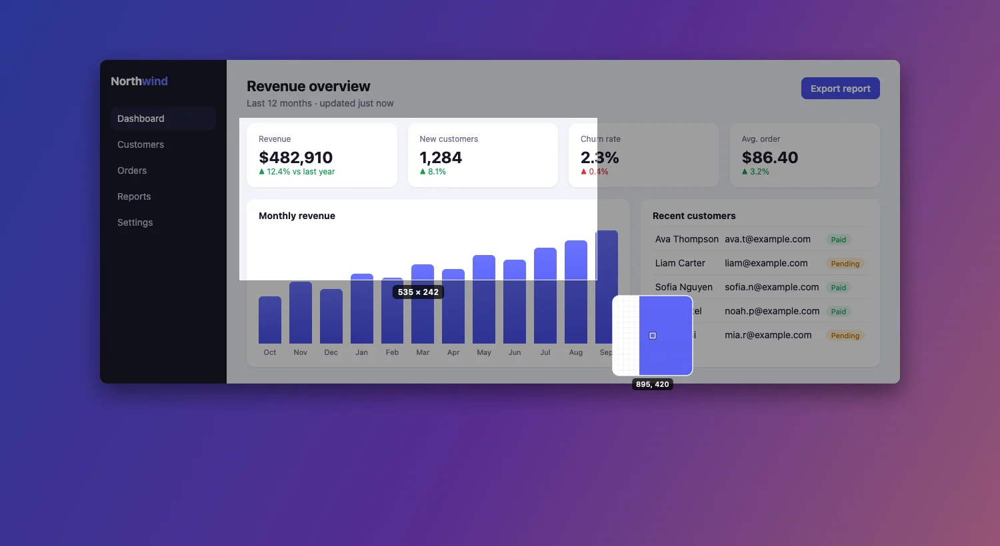

Native macOS app · Free and open source
Screenshots that
make the point.0 × 0
Glimpse lives in your menu bar. Capture an area, a window or a whole scrolling page, mark it up, redact it, pin it above your work, or record your screen with your camera and voice. Send a marked-up screenshot to your coding agent in one keystroke. Record your calls, too, and get a transcript made on your Mac.
v1.6.0 · macOS 14+ · Apple silicon and Intel · Other ways to install
Ava ThompsonPaid
Liam CarterPending
Sofia NguyenPaid
Noah PatelPaid
Mia RossiPending
Drag anywhere to take a screenshot ⌥⇧⌘4
Capture
Every way to grab the screen, one shortcut away.
The screen freezes the moment you start, so menus and hover states stay put. A pixel magnifier and live size help you land on the exact edge.
- Area
Crosshair, magnifier and live size. Press Space to switch to window mode.
⌥⇧⌘4 - Window
A clean cut-out with transparent corners and an optional soft shadow.
⌥⇧⌘5 - Scrolling
Long pages, chats and documents in one image. Sticky headers appear once.
⌥⇧⌘6 - Text (OCR)
Copy the text in any area, or read a QR code. Runs on-device.
⌥⇧⌘2 - Fullscreen and previous area
The whole display, or the same rectangle as last time.
⌥⇧⌘3 · ⌥⇧⌘7 - Self-timer
Three, five or ten seconds to open the menu you need.
⌥⇧⌘8

Quick Access Overlay
Your capture waits in the corner.
Hover it for Copy and Save, and a row of buttons to draw on it, keep it on screen, copy its text, move it to your recent screenshots or send it to your agent. Drag it straight into Slack, Mail or Finder. Swipe it away, and bring it back with ⌥⇧⌘9 if you change your mind.

Recent screenshots
Your last 30 screenshots, one double-tap away.
Double-tap the right Shift and your recent captures slide in at the edge of the screen, without taking focus from the app you're in. Click one to draw on it, select a few to copy, send or drag them into a chat, or step through them one after another. Your marks stay editable.
Stitch joins the ones you pick into a single numbered image, arranged so an AI model shrinks it the least and reads every piece clearly.


Annotate
Arrows, steps, blur. Every mark stays editable.
The arrow draws like a pencil: curve it around what's in the way, or keep it straight. Draw a box or an arrow and just start typing, and your note lands beside it. Select, move, resize, restyle or delete any mark after you draw it. Pixelate and blur hide what shouldn't be shared. Each tool is one key away.

- VSelect
- AArrow
- LLine
- RRectangle
- FFilled
- OEllipse
- PPen
- HHighlighter
- TText
- NSteps
- XPixelate
- BBlur
- SSpotlight
- CCrop
Record
Show it, with your face and voice.
Record an area or a whole display to MP4 at 30 or 60 fps. Your webcam rides along in a bubble you can drag, resize or mirror. Microphone and system audio mix into one track. Pause, restart or discard from a compact control bar that stays out of the video and drags anywhere by its grip. The finished video slides into the corner like any capture.

Pin
Keep a reference floating above everything.
Pin a capture over every window while you work: a design you're matching, numbers you're copying, steps you're following. Resize it, fade it, nudge it with the arrow keys, or lock it so clicks pass through.

Meetings
Every call, written down. On your Mac.
Glimpse notices calls in Meet, Zoom, Teams, Slack, Discord, FaceTime, Webex and Tuple, and records both sides when you say so. Parakeet transcribes on-device and tells speakers apart, with your name on your side. Optional Google Calendar adds the title and attendees.
Each meeting becomes a markdown file in ~/Glimpse/Meetings. Browse them in Transcription History, or let your agent search what was said. While recording, a small pill you can drag anywhere has mute, pause and stop. ⌃⌥M mutes your mic in every app.

# Weekly sync **Date:** 2026-11-17 10:00 **Duration:** 24 minutes **Attendees:** Ava Thompson, Liam Carter **Meeting URL:** https://meet.google.com/abc-defg-hij --- **Ava Thompson:** Revenue's up 12% on last year. November is on track to be the best month yet. **Liam Carter:** Nice. Churn ticked up, though. Can we look at the cancellations before Friday? **Ava Thompson:** Yes, I'll pull the list and send it over today.
Send to your agent
Draw on it, press ⌘↩, and Claude sees it.
Mark up what's wrong and send the screenshot straight to Claude Code or Codex, in a terminal, an editor or the Claude app. With several sessions open, a menu lists them by title, folder and app, the one you used last first. Glimpse's Claude Code plugin delivers it between turns, so nothing is typed into your terminal.
Your agent can draw back, in its own colour: it puts screenshots with its arrows, boxes and notes in your stack, or opens one with a question and waits for you to draw your answer.

For AI agents
Let your coding agent see the screen.
Glimpse includes an MCP server. Claude Code, Cursor and other agents can list windows, screenshot one even when it's covered, read text on-device, record short clips to check their own work, draw on screenshots to show or ask you something, and search your meeting transcripts. It's off until you allow it in Settings, and recordings always show Glimpse's controls so you can stop them.
Scriptable with glimpse:// URLs
Trigger any capture from Shortcuts, Raycast, Alfred or a shell script.
# a fixed region, saved without asking
open "glimpse://capture-area?x=100&y=80&width=800&height=400"
# a 30-second recording of the second display, with camera and mic
open "glimpse://record-fullscreen?display=2&camera=1&mic=1&duration=30"
# open an image in the editor
open "glimpse://annotate?filepath=/path/to/image.png"Install
One line in Terminal.
The script downloads the latest release, checks its SHA-256, moves Glimpse to Applications and opens it. After that, Glimpse updates itself.
Read the script · Download the .zip · Build from source
- Allow Screen Recording. A setup window walks you through it on first launch.
- Press ⌥⇧⌘4. The defaults stay clear of macOS's own shortcuts, and every one can be changed.
- Optional: Accessibility for auto-scroll, and camera and microphone for recordings and meetings.
Requires macOS 14 or later. Universal app for Apple silicon and Intel. The app is ad-hoc signed rather than notarized; the install script handles the first-launch warning for you.